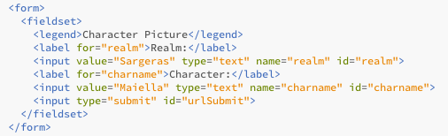
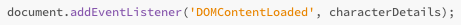
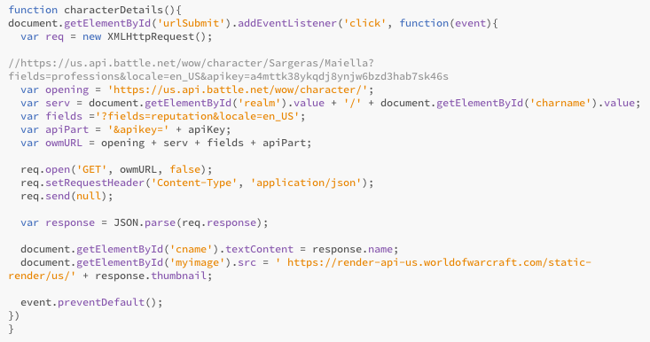
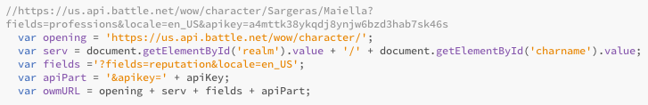
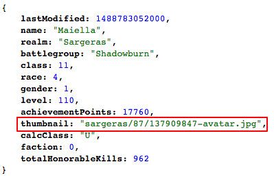

In this exercise we will explore how to retrieve a specific characters portrait from the WoW API.
To get us started I will show you a working example and we will go into more detail of how to accomplish this below. My buddy Jeeves will help us out on this one. Right now he is the default character, but once you submit a new character, my creation will go away. Why don't you give it a try!
I have automatially filled in the form for the character Maiella on the Realm Sargeras. You can look up for any active World of Warcraft character. If you have not logged into this character in a considerable amount of time, it will not return the picture. Here is a list of a few more characters you can try:
| Realm | Name |
|---|---|
| Hyjal | Mooshuhalo |
| Sargeras | Shokazula |
| Hippieflip | Zul'jin |
Lets break this down into steps and learn how to get this working.
Build the Form in HTML
Just like in the earlier example, we first need to build a form in HTML that we can then use to get our values that we want to look up with Javascript.
As you can see with the above code we are creating a form that has two seperate text boxes and a submit button. Each of these will have its' own unique name and id property, which will be used by our Javascript to get these values.
Submit Button
Just like in the Previous example, we need to create an event listener in Javascript to process this form on the same page. If we used the HTML form GET submission, then we would have to reload the page, which is not what we are looking to do. The Javascript makes it so that the page is more streamline and not something from 1995.
When the event happens the function characterDerails() will be called nd processed. Nothing new, but helps makes the page be more interactive.
Javascript Function
Just like in the previous section, we will break up the function into more manageable part. Let's be honest, nobody wants to read a wall of text. This next picture will be the entire Javascript function and following that we will go into more detail about each part.
API Call URL
Like every call that you do to an API, you need to create the specific URL. Below is the URL needed for this API call.
https://us.api.battle.net/wow/character/Sargeras/Maiella?locale=en_US&apikey=a4mttk38ykqdj8ynjw6bzd3hab7sk46s
Like the Realm Status function, we are going to make it so this only works for a character on a US server. You can expand this so it will check characters from other regions, however, this API key will only work for US servers. If you'd like to queue data from another region, then you will need another API key for each of the other regions and use the apporpriate key for the region selected.
Now that we know how to build our URL, we can use Javascript to take this static URL and make it dynamic. Below I have broken the URL into different pieces. We need to rebuld the URL so that it fits our needs.
The variable 'opening' contains the starting static portion of the URL. Remember, this will ONLY work for a US server. Changes would have to made to this part of the URL to make it work for another region.
The variable 'serv' is created by reading the values from our form. We determined that this was a dynamic portion of the URL by using the documentation to look of a few different characters and comparing the URLs.
The variables 'fields' and 'apiPart' are information that will not change and thusly have been hard coded. The only dymanic part of this is the apiKey, which was defined earlier.
Since Javascript allows you to easily concatinate variables, we create the variable owmURL and we now have a working API Call URL.
After we send off our call, we get a response. In this response we will get the following JSON Object.
In here we can see all of the returned information. For our character portrait, we care about the 'thumbnail' attribute. All of the other information is wonderful and can be used to build up other information about this character.
This thumbnail arrtibute is only part of the puzzle. Sadly, here is a place where the API documentation does not hep you. The documentation will not tell you how to use this information. I was able to figure it out by the help of the WoW Develpoment Community. Below is the missing piece to the puzzle.
https://render-api-us.worldofwarcraft.com/static-render/us/ + thumbnail